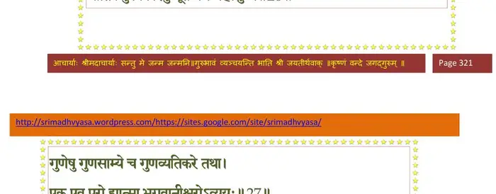
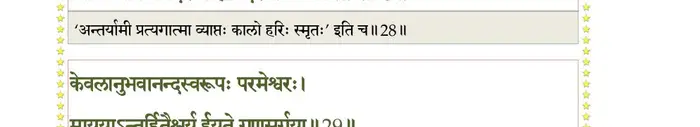
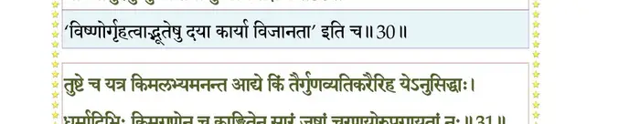
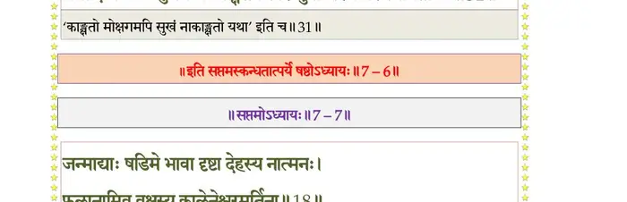

स्कन्ध 7 · अध्याय 6
श्लोक १
प्रह्लाद उवाच–
हन्तार्भका मे शृृणुत वचो वः सर्वतः शिवम् ।
वयस्यान् पश्यत मृतान् क्रीडान्धा मा प्रमाद्यथ।। १ ।।
हन्तार्भका मे शृृणुत वचो वः सर्वतः शिवम् ।
वयस्यान् पश्यत मृतान् क्रीडान्धा मा प्रमाद्यथ।। १ ।।
श्लोक २
न पुरा विवशा बाला आत्मनोऽर्थे प्रियैषिणः ।
गुरूक्तमपि न ग्राह्यं यदनर्थेऽर्थकल्पनम्।। २ ।।
गुरूक्तमपि न ग्राह्यं यदनर्थेऽर्थकल्पनम्।। २ ।।
श्लोक ३
यदुक्त्या न प्रबुध्येत सुप्तस्त्वज्ञाननिद्रया ।
न श्रद्दध्यान्मतं तस्य यथाऽन्धो ह्यन्धनायकः।। ३ ।।
न श्रद्दध्यान्मतं तस्य यथाऽन्धो ह्यन्धनायकः।। ३ ।।
श्लोक ४
कः शत्रुः क उदासीनः किं मित्रं चेह आत्मनः ।
भवत्स्वपि नयैः किं स्याद् दैवं संपद्विपत्पदम्।। ४ ।।
भवत्स्वपि नयैः किं स्याद् दैवं संपद्विपत्पदम्।। ४ ।।
श्लोक ५
यो न हिंस्याद् धर्मकाममात्मानं स्वजनेऽवशः ।
पुनः श्रीलोकयोर्हेतुः स मुक्तान्ध्योऽतिदुर्लभः।। ५ ।।
पुनः श्रीलोकयोर्हेतुः स मुक्तान्ध्योऽतिदुर्लभः।। ५ ।।
श्लोक ६
कौमार आचरेत् प्राज्ञो धर्मान् भागवतानिह ।
दुर्लभं मानुषं जन्म तदप्यध्रुवमर्थदम्।। ६ ।।
दुर्लभं मानुषं जन्म तदप्यध्रुवमर्थदम्।। ६ ।।
श्लोक ७
यदा हि पुरुषस्येह विष्णोः पादोपसर्पणम् ।
यदेष सर्वभूतानां प्रिय आत्मेश्वरः सुहृत्।। ७ ।।
यदेष सर्वभूतानां प्रिय आत्मेश्वरः सुहृत्।। ७ ।।
श्लोक ८
सुखमैन्द्रियकं दैत्या देहयोगेन देहिनाम् ।
सर्वत्र लभ्यते दैवाद् यथा दुःखमयत्नतः।। ८ ।।
सर्वत्र लभ्यते दैवाद् यथा दुःखमयत्नतः।। ८ ।।
श्लोक ९
तत् प्रयासो न कर्तव्यो यत आयुर्व्ययः परम् ।
न तथा विन्दते क्षेमं मुकुन्दचरणाम्बुजम्।। ९ ।।
न तथा विन्दते क्षेमं मुकुन्दचरणाम्बुजम्।। ९ ।।
श्लोक १०
ततो यतेत कुशलः क्षेमाय च यमाश्रितः ।
शरीरं पौरुषं यावन्न विपद्येत पुष्कलम्।। १० ।।
शरीरं पौरुषं यावन्न विपद्येत पुष्कलम्।। १० ।।
श्लोक ११
पुंसां वर्षशतं ह्यायुः तदर्धं चाजितात्मनः ।
निष्फलं यदसौ रात्र्यां शेतेऽन्धं प्रापितस्तमः।। ११ ।।
निष्फलं यदसौ रात्र्यां शेतेऽन्धं प्रापितस्तमः।। ११ ।।
श्लोक १२
मुग्धस्य बाल्यकौमारैः क्रीडतो याति विंशतिः ।
जरया ग्रस्तदेहस्य यात्यकल्पस्य विंशतिः।। १२ ।।
जरया ग्रस्तदेहस्य यात्यकल्पस्य विंशतिः।। १२ ।।
श्लोक १३
दुरापूरेण कामेन मोहेन च बलीयसा ।
शेषं गृहेषु सक्तस्य प्रमत्तस्यापयाति हि।। १३ ।।
शेषं गृहेषु सक्तस्य प्रमत्तस्यापयाति हि।। १३ ।।
श्लोक १४
पश्यध्वं मतिवैषम्यं ज्ञातीनां नः कुटुम्बिनाम् ।
श्रेयोविघातादायासादीहतामनु संसृतिम्।। १४ ।।
श्रेयोविघातादायासादीहतामनु संसृतिम्।। १४ ।।
श्लोक १५
को गृहेषु पुमान् सक्तमात्मानमजितेन्द्रियः ।
स्नेहपाशैर्दृढं बद्धमुत्सहेत विमोचितुम्।। १५ ।।
स्नेहपाशैर्दृढं बद्धमुत्सहेत विमोचितुम्।। १५ ।।
श्लोक १६
को न्वर्थतृष्णां विसृजेत् प्राणेभ्योऽपि य ईप्सितः ।
यं क्रीणात्यसुभिः प्रेष्ठैस्तस्करः सेवको वणिक्।। १६ ।।
यं क्रीणात्यसुभिः प्रेष्ठैस्तस्करः सेवको वणिक्।। १६ ।।
श्लोक १७
कथं प्रियाया अनुकम्पितायाः सङ्गं रहस्यं रुचिरांश्च मन्त्रान् ।
सुहृत्सुतस्नेहवशः शिशूनां कलाक्षराणामनुरक्तचित्तः।। १७ ।।
सुहृत्सुतस्नेहवशः शिशूनां कलाक्षराणामनुरक्तचित्तः।। १७ ।।
श्लोक १८
प्रत्ताः स्मरंस्ता दुहितॄर्हृदय्या भ्रातॄन् स्वसॄर्वा पितरौ च दीनौ ।
गृहान् मनोज्ञान् रुचिरच्छदांश्च वृत्तीश्च कुल्याः पशुभृत्यवर्गान्।। १८ ।।
गृहान् मनोज्ञान् रुचिरच्छदांश्च वृत्तीश्च कुल्याः पशुभृत्यवर्गान्।। १८ ।।
श्लोक १९
त्यजेत कोशस्थ इवेहमानः कर्माणि लोभादवितृप्तकामः ।
औपस्थ्यजैह्व्यं बहुमन्यमानः कथं विरज्येत दुरन्तमोहः ।। १९ ।।
औपस्थ्यजैह्व्यं बहुमन्यमानः कथं विरज्येत दुरन्तमोहः ।। १९ ।।
श्लोक २०
कुटुम्बपोषाय च यन्निजायुर्न बुध्द्यतेऽर्थं विहितं प्रमत्तः ।
सर्वत्र तापत्रयदुःखितात्मा निर्विद्यते न स्वकुटुम्बरामः ।। २० ।।
सर्वत्र तापत्रयदुःखितात्मा निर्विद्यते न स्वकुटुम्बरामः ।। २० ।।
श्लोक २१
वित्तेषु नित्याभिनिविष्टचेता विद्वांश्च दोषं परवित्तहर्तुः ।
प्रेत्येह वाऽथाप्यजितेन्द्रियस्तदशान्तकामो हरते कुटुम्बी ।। २१ ।।
प्रेत्येह वाऽथाप्यजितेन्द्रियस्तदशान्तकामो हरते कुटुम्बी ।। २१ ।।
श्लोक २२
विद्वानपीत्थं दनुजाः कुटुम्बं पुष्णन् स्वलोकाय न कल्पते वै ।
यः स्वीयपारक्यविभिन्नभावस्तमः प्रपद्येत यथा विमूढः ।। २२ ।।
यः स्वीयपारक्यविभिन्नभावस्तमः प्रपद्येत यथा विमूढः ।। २२ ।।
श्लोक २३
यतो न कश्चित् क्वच कुत्र विद्वान् दीनं स्वमात्मानमलं समर्थः ।
विमोचितुं वामदृशां विहारक्रीडामृगो यन्निगडोऽक्षिसर्गः।। २३ ।।
विमोचितुं वामदृशां विहारक्रीडामृगो यन्निगडोऽक्षिसर्गः।। २३ ।।
श्लोक २४
ततो विदूरात् परिहृत्य दैत्या दैत्येषु सङ्गं विषयात्मकेषु ।
उपेत नारायणमादिदेवं स मुक्तसङ्गैरिषितोऽपवर्गः।। २४ ।।
उपेत नारायणमादिदेवं स मुक्तसङ्गैरिषितोऽपवर्गः।। २४ ।।
श्लोक २५
न ह्यच्युतं प्रीणयतो बह्वायासोऽसुरात्मजाः ।
आत्मत्वात् सर्वभूतानां सिद्धत्वादिह सर्वतः।। २५ ।।
आत्मत्वात् सर्वभूतानां सिद्धत्वादिह सर्वतः।। २५ ।।
श्लोक २६
परावरेषु भूतेषु ब्रह्मान्तस्थावरादिषु ।
भौतिकेषु विकारेषु भूतेष्वथ महत्सु च।। २६ ।।
भौतिकेषु विकारेषु भूतेष्वथ महत्सु च।। २६ ।।
भागवततात्पर्यनिर्णय

श्लोक २७
गुणेषु गुणसाम्ये च गुणव्यतिकरे तथा ।
एक एव परो ह्यात्मा भगवानीश्वरोऽव्ययः।। २७ ।।
एक एव परो ह्यात्मा भगवानीश्वरोऽव्ययः।। २७ ।।
भागवततात्पर्यनिर्णय
श्लोक २८
प्रत्यगात्मस्वरूपेण कालरूपेण च स्वयम् ।
व्याप्यव्यापकनिर्देश्यो ह्यनिर्देश्योऽविकल्पितः।। २८ ।।
व्याप्यव्यापकनिर्देश्यो ह्यनिर्देश्योऽविकल्पितः।। २८ ।।
भागवततात्पर्यनिर्णय

श्लोक २९
केवलानुभवानन्दस्वरूपः परमेश्वरः ।
माययाऽन्तर्हितैश्वर्य ईयते गुणसर्गया।। २९ ।।
माययाऽन्तर्हितैश्वर्य ईयते गुणसर्गया।। २९ ।।
भागवततात्पर्यनिर्णय
श्लोक ३०
तस्मात् सर्वेषु भूतेषु दयां कुरुत सौहृदम् ।
भावमासुरमुन्मुच्य तया तुष्यत्यधोक्षजः।। ३० ।।
भावमासुरमुन्मुच्य तया तुष्यत्यधोक्षजः।। ३० ।।
भागवततात्पर्यनिर्णय

श्लोक ३१
तुष्टे च तत्र किमलभ्यमनन्त आद्ये किं तैर्गुणव्यतिकरैरिह येऽनुसिद्धाः ।
धर्मादिभिः किमगुणेन च काङ्क्षितेन सारं जुषां चरणयोरुपगायतां नः ।। ३१ ।।
धर्मादिभिः किमगुणेन च काङ्क्षितेन सारं जुषां चरणयोरुपगायतां नः ।। ३१ ।।
भागवततात्पर्यनिर्णय

श्लोक ३२
धर्मार्थकाम इति यो विहितस्त्रिवर्ग
ईक्षा त्रयी नयदमौ विविधा च वार्ता ।
मन्ये तदेतदखिलं निगमस्य सत्यम् ।
स्वात्मार्पणं स्वसुह्रदः परमस्य पुंसः।। ३२ ।।
ईक्षा त्रयी नयदमौ विविधा च वार्ता ।
मन्ये तदेतदखिलं निगमस्य सत्यम् ।
स्वात्मार्पणं स्वसुह्रदः परमस्य पुंसः।। ३२ ।।
श्लोक ३३
ज्ञानं तदेतदमलं दुरवापमाह
नारायणो नरसखः किल नारदाय ।
एकान्तिनां भगवतस्तदकिञ्चनानां
पादारविन्दरजसाऽऽप्लुतदेहिनां स्यात्।। ३३ ।।
नारायणो नरसखः किल नारदाय ।
एकान्तिनां भगवतस्तदकिञ्चनानां
पादारविन्दरजसाऽऽप्लुतदेहिनां स्यात्।। ३३ ।।
श्लोक ३४
श्रुतमेतन्मया पूर्वं ज्ञानं विज्ञानसंयुतम् ।
धर्मं भागवतं शुद्धं नारदाद् देवदर्शनात्।। ३४ ।।
धर्मं भागवतं शुद्धं नारदाद् देवदर्शनात्।। ३४ ।।
श्लोक ३५
दैत्यपुत्रा ऊचुः–
प्रह्लाद त्वं वयं चापि नर्तेऽन्यं विद्महे गुरुम् ।
एताभ्यां गुरुपुत्राभ्यां बालानामपि हीश्वरः।। ३५ ।।
प्रह्लाद त्वं वयं चापि नर्तेऽन्यं विद्महे गुरुम् ।
एताभ्यां गुरुपुत्राभ्यां बालानामपि हीश्वरः।। ३५ ।।
श्लोक ३६
बालस्यान्तःपुरस्थस्य महत्सङ्गो दुरन्वयः ।
छिन्धि नः संशयं सौम्य स्याच्चेद् विस्रम्भकारणम्।। ३६ ।।
छिन्धि नः संशयं सौम्य स्याच्चेद् विस्रम्भकारणम्।। ३६ ।।
।। इति श्रीमद्भागवते सप्तमस्कन्धे षष्ठोऽध्यायः ।।